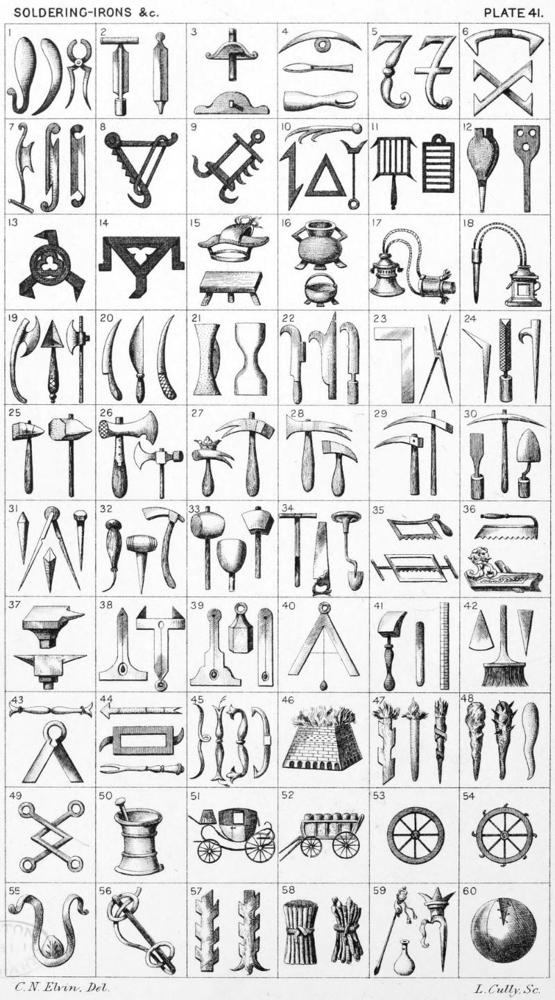

Plate 41.

Plate 41.
- Two Soldering irons ; and Pincers
- Curriers' Shaves
- Two examples of the Grose
- Wolf-trap ; a Point ; and Burling-iron
- Fleames
- A Cramp; and Two Cramps in Saltire
- Cutting iron ; and two examples of Glazier's nippers
- Hanger
- Hanger sometimes depicted as this
- A Flesh-hook ; a Kettle-hook ; a
Triangle iron ; and a Flesh-hook
- Two Gridirons
- Bellows ; and a Peel, or Bakers-shovel
- Trivet
- Triangle Trivet
- Patten; and a Trussel, or Trestle
- Flesh-Pot ; and a Caldron
- Penner and Ink-horn
- Another example of a Penner and
Ink-horn
- Plumbers cutting Knife ; Plumbers
triangular Soldering iron, or Shave-hook ; and Slaughter axe
- Butcher's Knife; a Shredding Knife;
and a Knife
- Brick axe ; and Bricklayer's axe
- A Forest, or Wood Bill ; a War-Bill ; and Pruning Knife
- A Square ; and Closing Tongs
- A File, between two Tenter-hooks
- Hand and Sledge hammer
- Plasterer's and Lathing hammer
- A Hammer ducally crowned ; and
a hammer with claws
- Hammer with claws ; and a Hammer
- Pavier's Picks
- Chisel ; a Pickaxe ; and Trowel
- A Nail; Compasses; a closing nail ;
and Passion nail
- Awl ; a Wimble or Winepiercer ;
and adze
- Beetle ; Mallet, and in the centre a
Stone-mason's Mallet
- Auger ; a Saw ; and Butteris
- Frame Saw as in the Arms of the
Fanmaker's Company The other
as borne by the name of Hamilton
- A Shaving iron ; and a Plane
- Anvils
- Level with plummet ; and a Level
reversed
- Level with plummet ; a Plummet ;
and a Level
- A Perpendiculum
- Bookbinder's polishing iron ; a folding stick ; and a Rule, or Yard-measure
- A Cone ; a Treble-Flat-Brush ; and
a Wedge, or Peg
- A Turret ; and Shears
- Broches ; a Merillion ; and Broches
- Four examples of Habicks
- Brick-Kiln
- Fire-brand ; a Torch ; and Hymeneal-torch
- A Club ; a Spiked Club ; and an
Icicle
- Angles interlaced
- Pestle and Mortar
- Coach
- A Wagon
- Cart-Wheel
- Catherine Wheel
- A Sling charged with a Stone
- A Sling
- A Staff-raguly couped at each end ;
and a Staff-raguly couped and
erased
- Bundle of Laths ; and a Fagot
- A Trailing-pike, or Leading-Staff;
a Stilt, and a Phval
- Foot-Ball